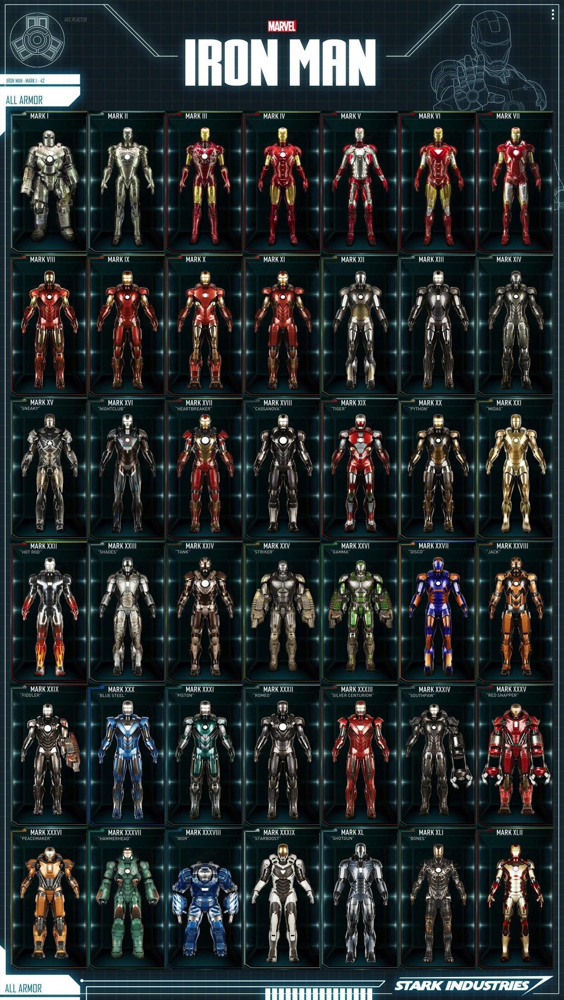

Anthony Edward "Tony" Stark was a billionaire industrialist, a founding member of the Avengers, and the
former CEO of Stark Industries.
A brash but brilliant inventor, Stark was self-described as a genius, billionaire, playboy, and
philanthropist.
About me
Portfolio

Anthony Edward "Tony" Stark was a billionaire industrialist, a founding member of the Avengers, and the
former CEO of Stark Industries.
A brash but brilliant inventor, Stark was self-described as a genius, billionaire, playboy, and
philanthropist.
×
A wealthy American business magnate, playboy, philanthropist, inventor and ingenious scientist,
Anthony Edward "Tony" Stark suffers a severe chest injury during a kidnapping.
When his captors attempt to force him to build a weapon of mass destruction, he instead creates
a mechanized suit of armor to save his life and escape captivity.
Later, Stark develops his suit, adding weapons and other technological devices he designed
through his company, Stark Industries.
He uses the suit and successive versions to protect the world as Iron Man. Although at first
concealing his true identity, Stark eventually publicly reveals himself to be Iron Man.
Initially, Iron Man was a vehicle for Stan Lee to explore Cold War themes, particularly the role
of American technology and industry in the fight against communism.
Subsequent re-imaginings of Iron Man have transitioned from Cold War motifs to contemporary
matters of the time.[1]
contact
phone: 123 456 789 00